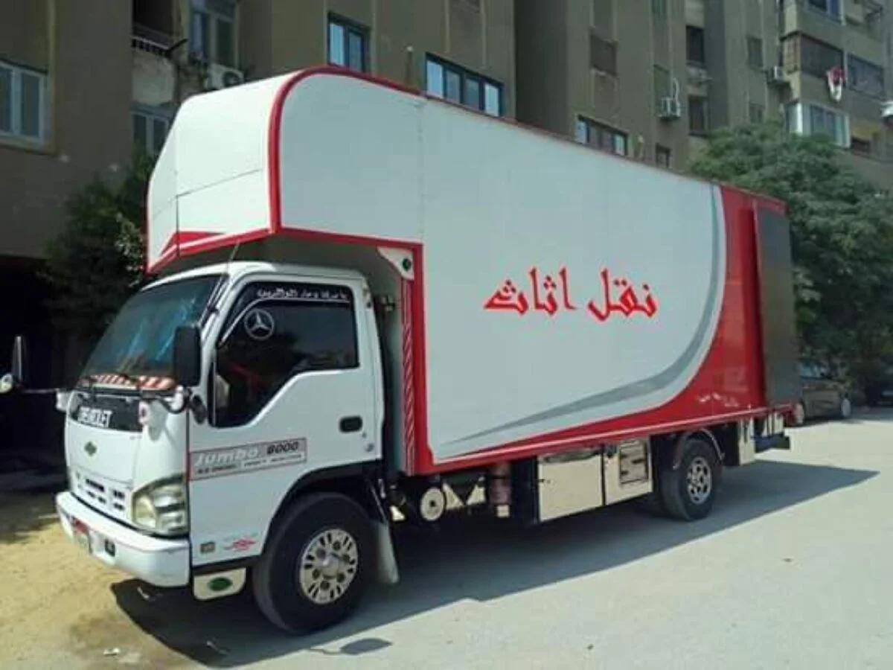

شركة نقل الرياض هي أفضل شركة نقل عفش جنوب الرياض 0541145506

يعد نقل عفش جنوب الرياض من الخدمات الأساسية التي يحتاجها سكان المنطقة عند الانتقال من منزل إلى آخر أو عند تجديد الأثاث. مع وجود العديد من الشركات التي تقدم هذه الخدمة، تبرز شركة نقل الرياض كواحدة من أفضل الشركات المتخصصة في نقل العفش بأعلى معايير الجودة والاحترافية. توفر الشركة خدمات متكاملة تشمل فك وتركيب الأثاث، النقل الآمن، والتغليف الاحترافي للحفاظ على مقتنيات العملاء من التلف ويمكنكم التواصل عبر الهاتف/الواتساب: 0541145506 او عبر الواتساب بالضغط هنا
أهمية اختيار شركة نقل موثوقة في جنوب الرياض
عند البحث عن شركة نقل عفش جنوب الرياض، يجب اختيار شركة تتمتع بالمصداقية والخبرة لضمان وصول الأثاث بأمان إلى الموقع الجديد دون أضرار. توفر شركة نقل الرياض:
- فريق عمل محترف ومدرب على التعامل مع جميع أنواع الأثاث.
- سيارات نقل مجهزة بأحدث التقنيات لضمان نقل آمن.
- استخدام مواد تغليف عالية الجودة لحماية الأثاث من الخدوش والتلف.
- سرعة في الأداء والالتزام بالمواعيد المحددة.
خدمات شركة نقل الرياض في نقل عفش جنوب الرياض
توفر شركة نقل الرياض مجموعة متكاملة من الخدمات التي تلبي احتياجات العملاء، وتشمل:
1. فك وتركيب الأثاث
يعد فك وتركيب الأثاث من أكثر المراحل حساسية في عملية النقل. تمتلك شركة نقل الرياض فريقًا متخصصًا في فك وتركيب جميع أنواع الأثاث، بما في ذلك:
- غرف النوم والمجالس.
- المطابخ بأنواعها المختلفة.
- المكاتب وأثاث الشركات.
- التحف والأنتيكات الحساسة.
2. التغليف الاحترافي في نقل عفش جنوب الرياض خاصةً
تستخدم الشركة مواد تغليف عالية الجودة، مثل البلاستيك المقوى، الكراتين القوية، والأشرطة اللاصقة، لضمان حماية الأثاث من الخدوش أو الكسر أثناء النقل.
3. النقل الآمن والسريع
تعتمد شركة نقل الرياض على أسطول من سيارات النقل الحديثة المجهزة بأنظمة تثبيت متطورة لضمان وصول الأثاث بأمان.
4. التخزين المؤقت
لمن يحتاج إلى تخزين العفش لفترة معينة، توفر شركة نقل الرياض مخازن مؤمنة ومجهزة للحفاظ على الأثاث بحالة ممتازة حتى موعد النقل.
لماذا تختار شركة نقل الرياض لنقل عفش جنوب الرياض؟
مع وجود العديد من الشركات التي تقدم خدمة نقل عفش جنوب الرياض، فإن شركة نقل الرياض تتميز بالعديد من العوامل التي تجعلها الخيار الأمثل:
- الخبرة الطويلة: تمتلك الشركة خبرة تمتد لسنوات عديدة في مجال نقل العفش.
- أسعار تنافسية: توفر الشركة خدمات بأسعار مناسبة تناسب جميع الفئات.
- خدمة العملاء المتميزة: فريق دعم متاح على مدار الساعة للرد على استفسارات العملاء.
- ضمان الحماية الكاملة: تقدم الشركة ضمانًا على جميع عمليات النقل، مما يضمن تعويض أي تلف قد يحدث.
مراحل عملية نقل العفش في جنوب الرياض
1. التواصل وحجز الخدمة
عند رغبتك في نقل العفش، يمكنك التواصل مع شركة نقل الرياض عبر الرقم 0541145506، حيث يتم تحديد موعد مناسب لزيارة الموقع وتقييم العفش.
2. التخطيط والتجهيز
يتم وضع خطة نقل دقيقة تشمل تحديد الأدوات والمعدات اللازمة لتنفيذ العملية بأعلى كفاءة.
3. الفك والتغليف
يتم تفكيك الأثاث وتغليفه بعناية لضمان عدم تعرضه لأي ضرر أثناء النقل.
4. التحميل والنقل
يتم تحميل الأثاث باستخدام أدوات خاصة، مثل الرافعات والعربات المتحركة، ثم يتم نقله بأمان إلى الموقع الجديد.
5. التركيب والترتيب
عند الوصول إلى الوجهة، يقوم الفريق بتركيب الأثاث وترتيبه وفق رغبة العميل، مما يضمن تسليم المنزل جاهزًا بالكامل.
نصائح عند نقل العفش جنوب الرياض
لضمان تجربة نقل سلسة، إليك بعض النصائح المهمة:
- احجز خدمة النقل مسبقًا لتجنب أي تأخير.
- قم بترتيب الأغراض الصغيرة داخل صناديق محكمة الإغلاق.
- ضع ملصقات على الكراتين لتحديد محتوياتها.
- تأكد من تفريغ الأجهزة الكهربائية قبل النقل.
- اختر شركة نقل الرياض لضمان خدمة موثوقة وآمنة.
تجارب العملاء مع شركة نقل الرياض
حازت شركة نقل الرياض على تقييمات إيجابية من عملائها الذين أشادوا بجودة الخدمة والاحترافية العالية. إليك بعض الآراء:
- “كانت تجربة رائعة، تم نقل الأثاث بسرعة ودون أي خدوش!”
- “أفضل شركة نقل عفش جنوب الرياض، فريق العمل محترف جدًا والأسعار مناسبة.”
- “خدمة ممتازة، حافظوا على جميع القطع الثمينة في منزلي دون أي ضرر.”
كيفية التواصل مع شركة نقل الرياض
لحجز خدمة نقل عفش جنوب الرياض، يمكنكم التواصل معنا عبر:
- الهاتف/الواتساب: 0541145506 او عبر الواتساب بالضغط هنا
- الموقع الإلكتروني: [naqul-riyadh.com]
خدمات إضافية توفرها شركة نقل الرياض
إلى جانب خدمة نقل عفش جنوب الرياض، تقدم شركة نقل الرياض خدمات إضافية مثل:
- تخزين الاثاث في مستودعات خاصه بالشركة
- تنظيف مكيفات بالرياض ايضا.
- خدمات النقل بين المدن: يمكن للشركة نقل العفش من وإلى مختلف مدن المملكة بأمان وسرعة.
ما يميز شركة نقل الرياض عن المنافسين؟
- التزام بالمواعيد: نحن ندرك أهمية الوقت ونحرص على الالتزام بالمواعيد المحددة.
- توفير الضمانات: لضمان رضا العملاء، نقدم ضمانات شاملة على خدماتنا.
- خدمة متكاملة: لا داعي للقلق بشأن أي مرحلة من مراحل النقل، فنحن نهتم بجميع التفاصيل.
الخاتمة
إذا كنت تبحث عن أفضل شركة نقل عفش جنوب الرياض، فإن شركة نقل الرياض هي الخيار الأمثل. بفضل خبرتها الطويلة، فريقها المحترف، وأسعارها التنافسية، تضمن لك تجربة نقل سلسة وآمنة دون أي قلق. لا تتردد في التواصل معنا اليوم للحصول على أفضل خدمة نقل عفش في جنوب الرياض!